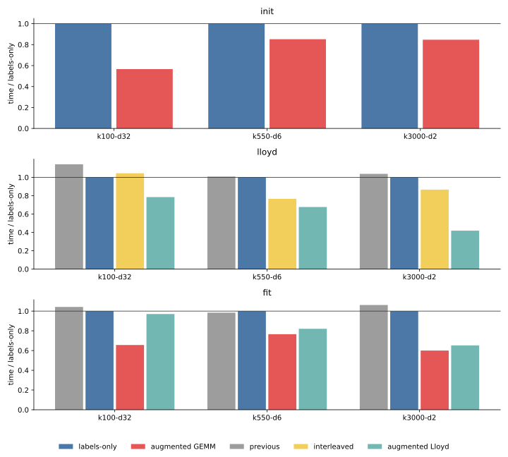
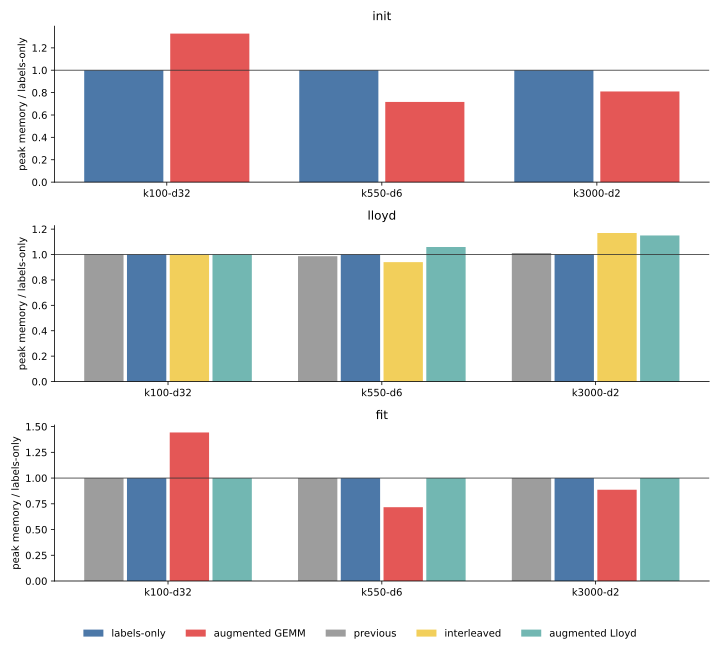
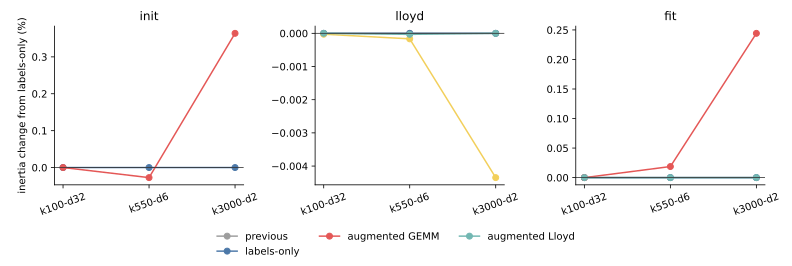

018 — Backend-neutral CPU optimization experiments
The previous CPU benchmark left the Python array-API estimator 3.4–13.5 times slower than cakedev0's Cython implementation, depending on phase and task. This iteration tests how much of that gap can be recovered without adding a backend-specific compiled kernel. The experiments intentionally leave the catastrophic-cancellation repair from 017 aside so that dispatch, tiling, and buffer costs can be isolated.
The implementation and benchmark are pinned to commit 6c25822:
gemm_labelsremoves the winning-score gather when assignment needs labels only;assign_homogeneous_tiledfolds the center norms into an augmented matrix product;lloyd_step_interleavedassigns and accumulates one sample tile at a time;_row_norm_and_variancecomputes two input statistics in one feature-tiled pass;hierarchical_weighted_drawprototypes cakedev0-style two-level sampling;workermeasures each method in a fresh process.
results.json preserves all three exploratory iterations and the final repeated run. tables.md contains the compact timing summary.
Setup
- PyTorch CPU, float32, four CPU threads, three seeds, 12 Lloyd iterations,
tol=1e-8, and a fresh process for every row. - Three representative tasks: 1,500,000 by 32 with 100 clusters; 525,000 by 6 with 550 clusters; and 135,000 by 2 with 3,000 clusters.
- Initialization measures greedy k-means++ only. Lloyd starts from the same saved rows. Full fit includes initialization and Lloyd.
- Quality is direct assigned-distance inertia, not the cancellation-prone GEMM score.
- Peak memory is the process high-water mark above the post-input baseline.
- The two wide tasks from the five-task suite were omitted because retaining an extra augmented copy would not preserve the required 20% host-memory headroom.
Iteration 1 — reduce assignment bookkeeping
The first change recognizes the common case where every center fits in one centroid tile. Assignment then needs only argmin(GEMM scores): it does not need to gather each winning score or merge running minima across center tiles. This labels-only path is a safe default because it is mathematically the same assignment and does not allocate a new input-sized buffer.
It gives modest Lloyd improvements: 12% at k100-d32, 1% at k550-d6, and 4% at k3000-d2. Larger score tiles are not a general solution. A 1024 × all-k tile occasionally helps at 550 clusters, but full-cluster tiles at 3,000 clusters take 15–19 seconds, compared with about 12 seconds for the existing 4096 × 256 schedule. More GEMM work per call does not offset the cache pressure and much larger score matrix.
Iteration 2 — move and combine work
Interleaving assignment and accumulation improves locality for the low-dimensional tasks. It reduces Lloyd from 3.70 to 2.83 seconds at k550-d6 and from 11.05 to 9.57 seconds at k3000-d2, but regresses k100-d32 from 2.98 to 3.11 seconds. It is useful as an optional execution shape, not a universal default.
Two ideas modeled on cakedev0 did not transfer well to eager array operations:
- Hierarchical weighted sampling is consistently slower than the backend's optimized full cumulative sum and changes the random-number stream.
- Combining row norms and feature variance into one Python-tiled traversal is slightly slower than separate backend reductions.
torch.compile also does not pay on these CPU workloads. Compilation costs 2.4–3.1 seconds, and the compiled callable remains slower than the augmented GEMM path even when compilation time is excluded. The hook remains useful for experimentation, but compilation should not be enabled by default.
Iteration 3 — fold score arithmetic into GEMM
For assignment, the row norm is constant across centers, so the relevant score is
-2 X @ C.T + ||C||².Appending a column of ones to X and appending ||C||² to -2 C evaluates that score with one matrix product. The augmented sample matrix is built once and reused throughout initialization or Lloyd. This removes one multiply and one add over every score tile while using only standard array-API operations.

The resulting mean times are:
| phase | task | previous or labels-only | augmented GEMM | speedup |
|---|---|---|---|---|
| initialization | k100-d32 | 5.778 s | 3.271 s | 1.77x |
| initialization | k550-d6 | 3.612 s | 3.077 s | 1.17x |
| initialization | k3000-d2 | 7.238 s | 6.129 s | 1.18x |
| Lloyd | k100-d32 | 3.399 s | 2.336 s | 1.46x |
| Lloyd | k550-d6 | 3.729 s | 2.502 s | 1.49x |
| Lloyd | k3000-d2 | 11.473 s | 4.631 s | 2.48x |
| full fit | k100-d32 | 8.056 s | 5.072 s | 1.59x |
| full fit | k550-d6 | 6.882 s | 5.355 s | 1.29x |
| full fit | k3000-d2 | 18.921 s | 10.695 s | 1.77x |
For k3000-d2, using standard k-means++ and augmented Lloyd takes 11.629 seconds, a 1.63x full-fit speedup while preserving the baseline initializer exactly.
Memory and quality

The augmented representation has a workload-dependent memory cost. At k100-d32, initialization peak increment grows from 298 to 396 MiB and full fit from 453 to 654 MiB. On the low-dimensional tasks it is neutral or lower within process high-water-mark effects: full-fit increments change from 225 to 162 MiB at k550-d6 and from 123 to 109 MiB at k3000-d2. Augmented Lloyd alone adds about 6 MiB and 14 MiB on those two tasks.
This is not a free transformation: it retains another (n, d + 1) array. A production dispatch needs an explicit memory budget, especially for the omitted wide tasks. The Python array API offers neither an out= matrix product nor a reusable output-buffer contract, so cakedev0-style score-buffer reuse cannot be expressed portably.

At k100-d32, augmented full fit matches baseline inertia exactly across all seeds. Mean inertia changes by +0.019% at k550-d6 and +0.244% at k3000-d2, because small initialization-score differences change weighted sampling. Applying augmentation only to Lloyd preserves baseline initialization and quality. Interleaving changes results only at small reduction-order levels.
The augmented identity has the same catastrophic-cancellation issue as the ordinary GEMM identity. It must eventually be combined with the selective direct-distance repair and dense-trigger broadcast fallback recommended in 017.
Comparison with cakedev0
The CUDA benchmark host containing the cakedev0 PR 23+26 build was unreachable for the final run. Therefore, this report does not claim a new same-host comparison. Applying the measured local speedups to the historical same-host gaps from 015 gives a projection, not a measurement:
| phase | projected optimized / cakedev0 range |
|---|---|
| initialization | 4.7–6.1x |
| Lloyd | 2.3–5.5x |
| full fit | 3.6–5.4x |
The optimizations recover a meaningful 1.2–2.5x, but they do not close the gap. Cakedev0 still benefits from OpenMP chunk parallelism, BLAS alpha/beta into reusable buffers, fused top-1 and per-thread accumulation, and far fewer Python dispatches. Matching it is likely to require a compiled fused CPU kernel rather than more eager array-expression rearrangement.
Recommendation
1. Keep the labels-only single-center-tile path as the production default. 2. Retain augmented GEMM as an experimental path until it has a memory-budget guard and cancellation-safe fallback. 3. Keep interleaving as a secondary low-dimensional option. 4. Do not adopt globally larger score tiles, hierarchical sampling, compilation, or fused Python-level statistics based on these results. 5. If CPU parity with cakedev0 is required, add a compiled fused assignment and accumulation hook while preserving the portable array-API fallback.
Previous: GEMM cancellation fallback. Next: CPU and GPU optimization rerun. Index: journal.